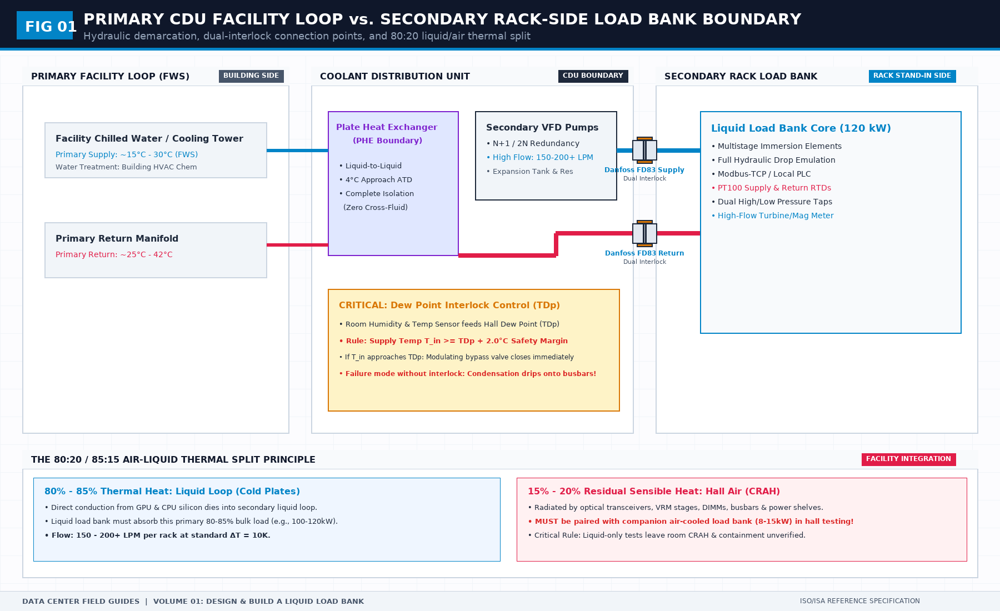
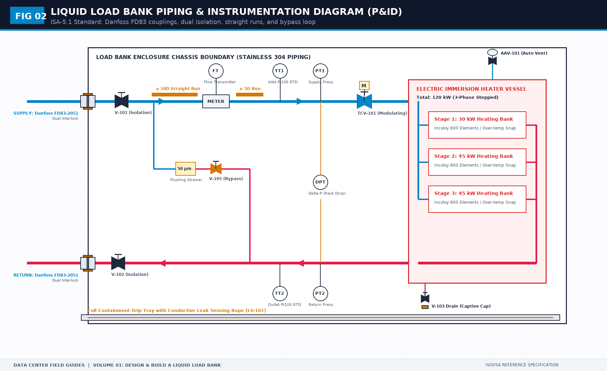

NVL72 Liquid Load Bank Testing: P&ID Hydraulics, Quick Disconnects, and Boundary Acceptance
Direct Answer Block: A liquid load bank is a specialized commissioning instrument engineered to simulate the thermal heat rejection and hydraulic pressure drop of an NVL72-class AI rack prior to server delivery. It isolates the facility water distribution loop from the IT whitespace, validating CDU pumping curves and primary cooling loops without putting live production compute silicon at risk. It must never be configured to replace the Coolant Distribution Unit (CDU) or certify IT operating system boot health.

When commissioning an AI data hall destined for 132 kW high-density compute racks—such as NVIDIA NVL72 systems—mechanical contractors and facilities directors face a critical operational trap: attempting to verify facility loops with live compute hardware.
Plugging a multi-million-dollar AI supercluster into an unverified, un-flushed facility coolant loop is professional negligence. Debris from construction piping will foul micro-channel cold plates within hours, while uncalibrated pressure surges can rupture blind-mate quick disconnects.
To bridge this gap, testing engineers deploy liquid load banks. However, a liquid load bank is frequently misunderstood, incorrectly plumbed, and burdened with responsibilities it cannot legally or physically bear.
1. The Core Engineering Split: Load Bank vs. CDU
The most dangerous field error is asking a liquid load bank to "act as the CDU for a day."
A liquid load bank and a Coolant Distribution Unit (CDU) perform opposite thermodynamic roles:
- The Coolant Distribution Unit (CDU) is the source plant. It contains the heat exchanger, circulating pumps, expansion vessel, de-ionization bypass, and proportional control valves that condition the secondary liquid loop.
- The Liquid Load Bank is the heat and flow sink. It contains electric immersion heating elements, flow-balancing orifices, calibrated pressure transducers, and quick-disconnect manifolds designed to mimic the thermal and hydraulic impedance of 72 Blackwell GPUs.
| FACILITY PRIMARY LOOP (Chilled Water / FWS) | |
|---|---|
| COOLANT DISTRIBUTION UNIT (CDU) [Plant: Heat Exchanger + Pumps] | |
| LIQUID LOAD BANK (LLB) [Sink: Heaters + Calibrated Orifices] Simulating: 132 kW Heat & 110 L/min Flow |
If you combine the pump and the load into a single custom box, you have not tested the facility. You have merely tested a closed-loop recirculation cart. When the permanent CDU arrives, your previous commissioning pass is completely invalid.
2. Hydraulic Friction and Pressure Drop (ΔP) Calculations
To accurately represent an NVL72 rack, the liquid load bank must replicate both the steady-state thermal load (120–135 kW) and the exact hydraulic flow resistance curve of the server manifold.
Fluid head loss across the load bank manifold and quick disconnects is governed by the Darcy-Weisbach equation:
Where:
- ΔP is the total pressure drop across the load bank (Pa).
- λ is the Darcy friction factor.
- L is the internal pipe length (m), and D is the hydraulic diameter (m).
- ζ represents local loss coefficients for quick disconnects, 90-degree elbows, and heating element bundles.
- ρ is the coolant fluid density (1,020–1,050 kg/m³ for water/propylene glycol mixtures).
- v is the mean coolant velocity (m/s).

The Quick Disconnect Reality: Danfoss FD83 vs. UQD
While Universal Quick Disconnect (UQD) fittings are widely cited in early Open Compute Project (OCP) whitepapers, actual field commissioning and heavy load-bank testing predominantly utilize Danfoss FD83 series quick-disconnect couplings (e.g., 1-inch or 1.25-inch dual-interlock couplings) due to their robust mechanical latching, zero-spill flush face valving, and high flow coefficients (C_v ≥ 12.5).
At a design flow rate of 110 L/min (1.83 × 10^{-3} m³/s), a pair of Danfoss FD83 couplings introduces approximately:
If your load bank utilizes undersized test hoses (DN20 instead of DN32) or generic industrial air fittings, your measured pressure drop will exceed 150 kPa. The facility CDU pumps will run at 100% VFD output, cavitation will occur at pump impellers, and the test will fail on artificial hydraulic choking.
3. Thermal Energy Balance and Flow Rate Sizing
The thermal power dissipated by the immersion heating elements must strictly balance the secondary loop convective heat absorption:
Where:
- Q is electric immersion heater power (132.0 kW = 132,000 W).
- ṁ is mass flow rate (kg/s).
- C_p is specific heat capacity (4.186 kJ/kg·°C for pure treated water, or ≈ 3.95 kJ/kg·°C for 25% propylene glycol).
- ΔT = (T_return - T_supply) is fluid temperature rise across the rack (10–15°C).
For an operating temperature differential ΔT = 12.0°C with a 25% PG water mixture:
If the facility cooling loop supply temperature wanders from 30°C to 36°C, the return temperature will breach 48°C. The load bank must feature an automated over-temperature thermal cutout set to 55°C to prevent boiling and glycol thermal degradation.
4. The Two Documents You Hand Over: Requirements vs. Acceptance
A successful load bank campaign begins with two printed, pre-agreed sheets:
Sheet 1: The Requirements Sheet (Before Cutting Metal)
- Interface Boundaries: Exact connection type (Danfoss FD83 female body, 1.25" NPT), supply on bottom, return on top.
- Electrical Voltage: 400 V or 480 V 3-phase, 4-wire + PE, rated full load current I_fla ≤ 200 A.
- Step-Loading Resolution: Minimum 6 discrete steps (e.g., 22 kW increments) to prevent utility step-load frequency trips.
- Hydraulic Range: Maximum permissible clean pressure drop ΔP ≤ 65 kPa at 120 L/min.
Sheet 2: The Factory Acceptance Sheet (FAT)
- Hydrostatic Pressure Test: 1.5× maximum design working pressure (1.5 × 10 bar = 15 bar) held for 60 minutes with zero gauge decay.
- Helium / Nitrogen Mass Spectrometer Sniffer Test: Leak rate < 1.0 × 10^{-6} mbar·L/s.
- Emergency High-Temperature Dump: Cut power to heaters within 250 ms upon flow loss (Q < 15 L/min).
Frequently Asked Questions (FAQ)
What is the difference between a liquid load bank and a traditional air load bank?
A traditional air load bank uses resistive heater coils and high-velocity electric fans to dump sensible heat into room air. A liquid load bank transfers electrical thermal energy directly into circulating liquid coolant (water or glycol) through immersion heaters and calibrated fluid passages, validating liquid-to-liquid CDUs and facility chilled water loops without heating the whitespace air.
Can a liquid load bank verify that an NVL72 AI cluster will boot?
No. A liquid load bank has zero PCIe, InfiniBand, Ethernet, or NVLink compute interfaces. It only tests hydraulic flow resistance (ΔP) and thermal heat dissipation (Q). Server firmware initialization, optic eye margins, and distributed training convergence can only be tested with genuine production compute trays.
Why are Danfoss FD83 quick disconnects preferred over standard industrial couplings in load bank testing?
Danfoss FD83 couplings provide heavy-duty dual-interlock safety mechanisms that prevent accidental disconnection under working pressure, along with precision flat-face valves that eliminate fluid spillage during connection/disconnection (<0.1 mL per cycle), preventing conductive liquid drips onto live electrical busways.
The Book Bridge
Understanding liquid load bank boundaries is the first step toward a flawless Level 4 commissioning sign-off. The full operational manual—including complete P&ID drawings, electrical step-switch schematics, sensor accuracy calibration sheets, and formal acceptance refusal criteria—is published in Design and Build a Liquid Load Bank for NVL72 Racks by Tristan.
Get the Complete Field Guide on Amazon →
Master the Complete Protocol: Design and Build a Liquid Load Bank for NVL72 Racks
A Field Guide to Interface Boundaries, P&ID Hydraulics, Thermal Envelopes, and Acceptance Sheets
Stop relying on contractor spreadsheets and vendor marketing claims. This field guide provides the complete, auditable verification binder—including physical equations, inspection stations, acceptance thresholds, and signed refusal templates.